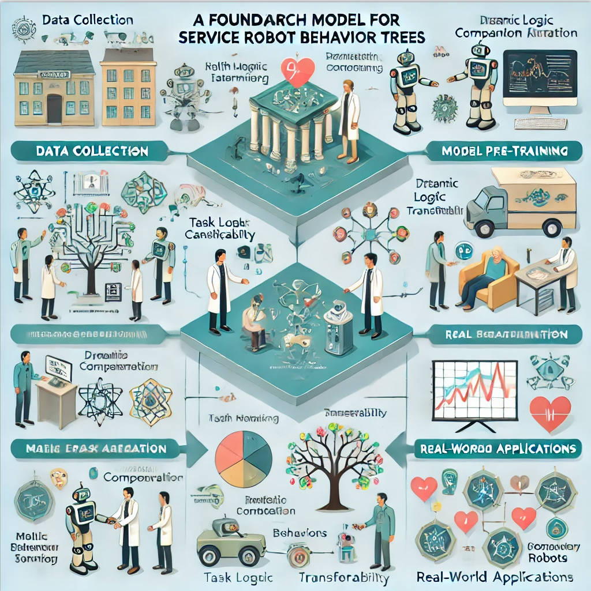
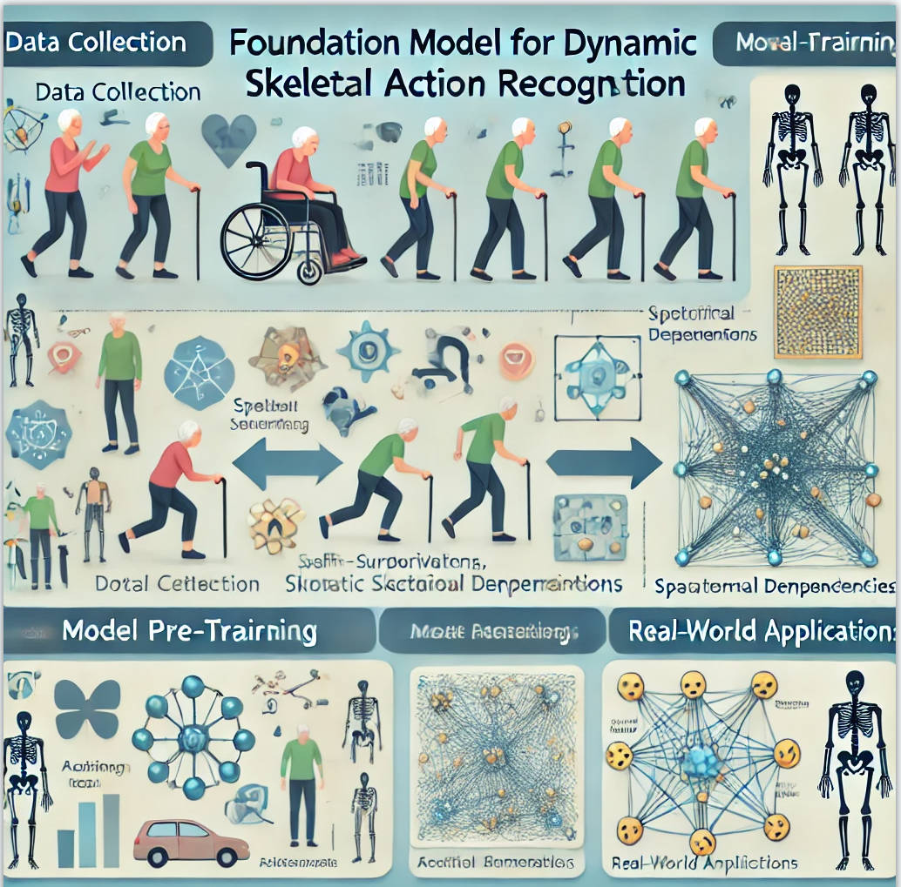
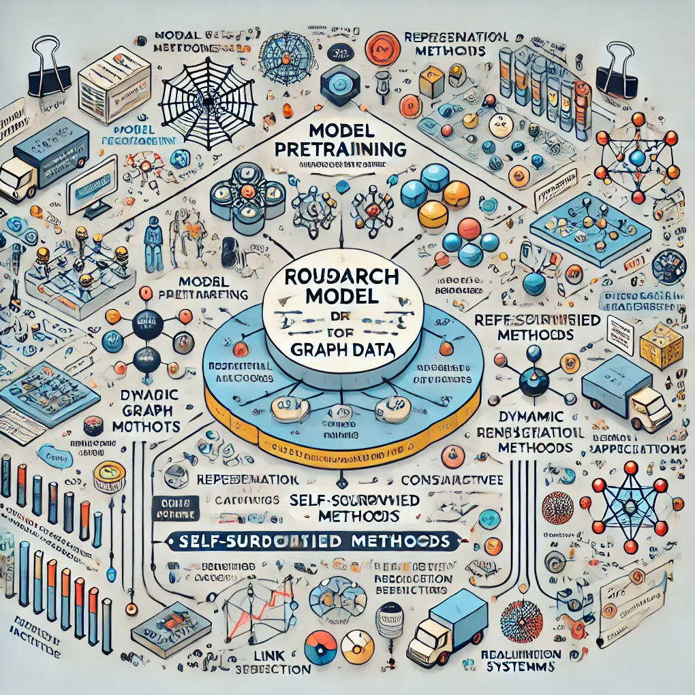

Jisheng Qin
 |
Jisheng Qin (秦吉胜) Ph.D Graph Neural Network; Large Language Models; Computer Human Interaction Institute of Computer Engineering and Information Technology Chuzhou University Email: jisheng.qin.vip@gmail.com [Google Scholar]
[GitHub]
|
Biography
I received my Ph.D degree from Hohai University in 2023. I am a lecturer in Institute of Computer Engineering and Information Technology, Chuzou University.
Research Interests
Foundation Model for Behavior Tree
|
The goal is to create a universal behavior tree model that enhances the performance of various downstream tasks in robotics. Starting with health monitoring tasks in real-world elderly care scenarios, we analyze the execution patterns of service robots' behavior trees. By modeling task dependencies and logical connections, we employ self-supervised learning methods to capture spatiotemporal correlations, facilitating task logic transferability across different care environments. We pre-trained a foundational behavior tree model with 500 million parameters using large-scale elderly care task data. Incorporating more complex behavior data, such as multi-robot collaboration and emergency scheduling, we expanded the model to 1 billion parameters. The enhanced model supports dynamic task allocation, emotional companionship, and rapid adaptation to diverse scenarios through a unified framework called CareAlign. To address data scarcity, we developed BehaviorSynth, a diffusion-based model for generating synthetic behavior tree data, enabling robust generalization and scalability. Papers: Codes: Dataset: |
 |
{kind=link}
Foundation Model for Skeletal Action Recognition
|
We aim to establish a foundational model for dynamic skeletal action recognition, enhancing intelligent health monitoring and behavior analysis in elderly care. This model enables tasks such as fall detection, daily activity monitoring, and motion rehabilitation, promoting personalized health management for older adults. Starting with real-world scenarios, we analyze skeletal motion patterns, identifying actions while monitoring health in real time. Utilizing biomechanics and graph neural networks, we built a skeletal keypoint data model and applied self-supervised learning to capture spatiotemporal dependencies. Pretrained on extensive skeletal datasets, our model, with up to 1 billion parameters, adapts to various downstream tasks and environments. The BoneAlign framework enhances cross-scenario adaptability with minimal labeled data, supporting anomaly detection and health recommendations. To mitigate data scarcity, we developed ActionSynth to generate diverse dynamic skeletal datasets, ensuring robustness and scalability in real-world applications. Papers: Codes: Dataset: |
 |
{kind=link}
Foundation Model for Graphs
|
We aim to pretrain a general-purpose graph foundation model using extensive graph data. This model delivers robust performance across a variety of downstream tasks after fine-tuning, addressing challenges and demonstrating broad application potential. Our graph foundation model features enhanced representational capabilities, leveraging advanced pretraining strategies and self-supervised learning methods to capture graph structures effectively. During adaptation to downstream tasks, we explored intrinsic factors affecting model performance and designed parameter-efficient techniques. To address dataset scarcity, we introduced DGraph, a large-scale dynamic graph action recognition dataset. This resource supports the development of robust graph-based models, advancing applications in areas like link prediction, recommendation systems, and dynamic network analysis. Papers: Codes: Dataset: |
 |
{kind=link}
Recent News
2024
10/2024: Our paper Heterogeneity Modeling with Flexibility-based Graph Neural Networks is accepted at ISPA 2024
9/2024: Our paper Modeling Heterogeneity with Flexible and Semantic Aligned Graph Neural Networks is accepted at ACES-China 2024
9/2024: Our paper Efficient Group-Aware Graph Neural Network for Air Quality Forecasting in Small-scale Spaces is accepted at ACES-China 2024
8/2024: Honored to receive a grant from Chuzhou University Scientific Research Initiation Fund. (2024QD14)
6/2024: Honored to receive a grant from the Higher Education Research Program Project. (2024AH051400)
4/2024: Honored to receive a grant from Anhui Engineering Research Center for Intelligent Applications and Security of Industrial Internet. (IASII24-06)
Preprints
2024
Heterogeneity Modeling with Flexibility-based Graph Neural Networks .
Jisheng Qin, Tao Tao, Zijie Liu, Haibo Chen and Shenghui Zhao.
IEEE International Symposium on Parallel and Distributed Processing with Applications (ISPA 2024).
Modeling Heterogeneity with Flexible and Semantic Aligned Graph Neural Networks.
Wantong Sui, Zijie Liu, Shenghui Zhao and Jisheng Qin*.
2024 International Applied Computational Electromagnetics Society Symposium (ACES-China)
Efficient Group-Aware Graph Neural Network for Air Quality Forecasting in Small-scale Spaces.
Jisheng Qin, Zijie Liu, Wantong Sui and Shenghui Zhao.
2024 International Applied Computational Electromagnetics Society Symposium (ACES-China)
2023 and before
Context-sensitive graph representation learning.
Jisheng Qin, Xiaoqin Zeng, and Yang Zou.
International Journal of Machine Learning and Cybernetics. 2023, 14(6): 2193-2203.
Structural reinforcement-based graph convolutional networks.
Jisheng Qin, Qianqian Wang, and Tao Tao.
Connection Science. 2022, 34(1): 2807-2821.
Multi-Semantic Alignment Graph Convolutional Network.
Jisheng Qin, Xiaoqin Zeng, and Yang Zou.
Connection Science. 2022, 34(1): 2313-2331.
Feature recommendation strategy for graph convolutional network.
Jisheng Qin, Xiaoqin Zeng, and Yang Zou.
Connection Science. 2022, 34(1): 1697-1718.
E-GCN: graph convolution with estimated labels.
Jisheng Qin, Shengli Wu, and E Tang.
Applied Intelligence. 2021, 51: 5007-5015.
Services
Conference Reviewers
International Conference on XXXXX.
Journal Reviewers
Information Sciences
- Information Sciences